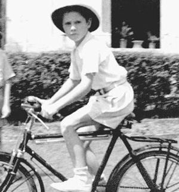

|
SADLER HOUSTOUN MORGAN
Father Houstoun Morgan; Mother Peters Vivienne Morgan
Born in Melbourne (AUS) Oct. 1, 1932
Died, near Chicago (IL) Apr. 28, 2011
Married in Charlottesville (VA) to Sudler Julia Ellen Apr. 5, 1958
 descendent
descendent

Dear ones,
It is with great sadness that I share the news of our father's death at around 10:30 p.m. Chicago time, Thursday, April 28, 2011. Mom had gone to visit Dad after lunch with her friend Meg only to find him "resting quietly" and having difficulty breathing. The hospice helper, Sarah, saw to it that he had had some mucus aspirated, was given medication to help open up his lungs and a generic morphine to help him relax, as he had been deteriorating since lunchtime and may not have even been conscious when Mom was visiting. Later on, they gave him some oxygen to help him breathe. Then nature took its course and his soul left to join those of his parents', Papa Howie & Mother Vives, and his brother, David...may the Lord bless him and keep him and make His Light shine upon him...may he rest in peace.
After speaking with Mac and Mom, I am hoping that some of Dad's ashes can be brought by them here to spread up at Marmoraia, in the beautiful Tuscan countryside.
I believe that Catherine is trying to get a flight to go and stay with Mom starting on Sunday, May 1.
I have spoken with Virginia at cousin Charlie's in France. He will be driving her home tomorrow and we will spend several days all together here as things proceed in Chicagoland.
Your support and comfort for my family during these days is dearly treasured. Remember our father for his bright blue eyes, laughter and sense of humor, his love of children, of history and his great gift for speaking.
Please pass this on to cousin Dana and her children and grandchildren, John Jr., Mugsy and Art, Levon and anyone else not on the above list.
I am thankful for my family and the love we share...help us be generous with our time, love and energy.
As you go about your daily lives do not forget to "be who you were meant to be and you will set the world on fire" These are words said by Saint Catherine of Siena and today is her festival day. Our father, along with our mother's steadfastness and love, gave me a solid foundation from which I could venture out to be who I was meant to be. For this, I will be forever grateful to him, Houstoun Morgan Sadler.
Peace be with you.
lovingly,
Helen and family
|